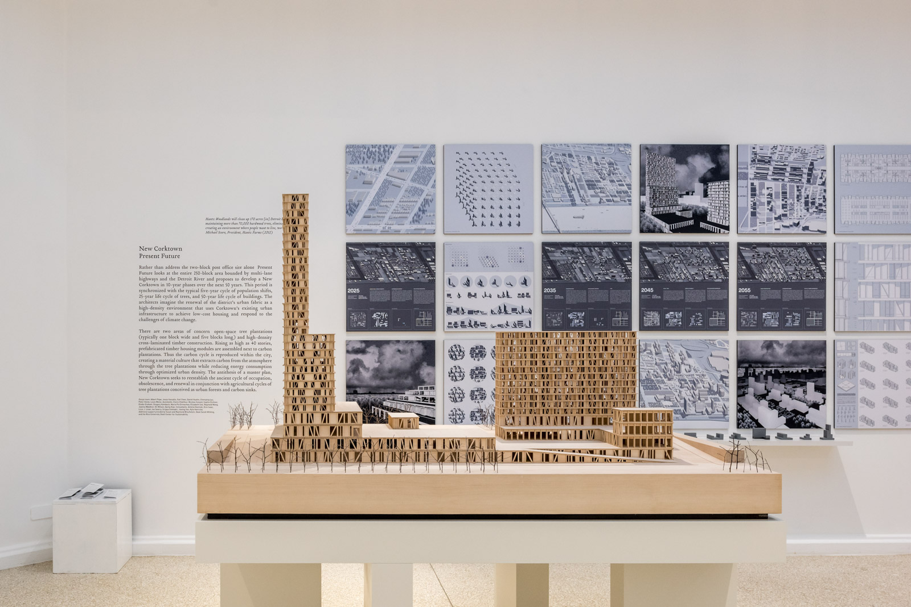

Seven years of architectural design practice taught me not only how to use design tools, but how to think as a user-centered designer.
The New Corktown - Fifty-year Masterplan for Detroit
The project, a contribution to the American Pavilion of the 2016 Venice Biennial, speculates on a renewal of the entire district of Corktown in Detroit as a high-density environment built with mass timber